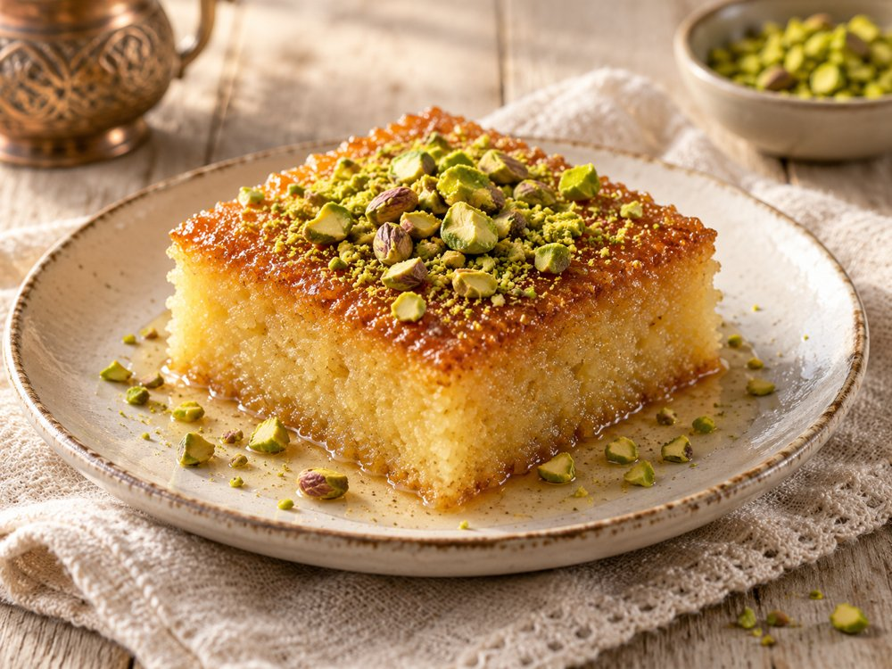
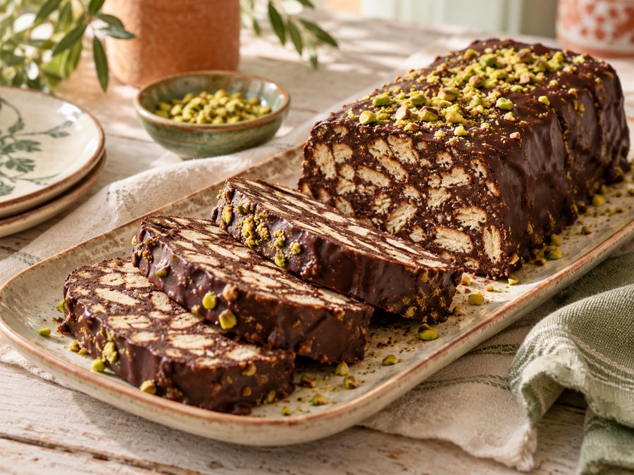

Tatlılar
Bisküvili Mozaik Pasta
Fırın kullanmadan yapılan, dilimlerinde bisküvi parçaları görünen çikolatalı pasta.
◷ 20 dk + 4 saat soğutma
🍽 8 dilim
✦ Çok Kolay
Malzemeler
Su bardağı 200 ml · Çay bardağı 100 ml
Yapılışı
1
Tereyağını küçük tencerede erit. Süt, kakao ve şekeri ekleyip pürüzsüz olana kadar karıştır.
2
Şeker eriyince ocağı kapat. Karışımı 5–10 dakika ılımaya bırak.
3
Bisküvileri elinle iri parçalara kır; un gibi ufalama.
4
Ilık kakaolu sosu bisküvilere dök. İstersen ceviz ekle; parçaları ezmeden karıştır.
5
Küçük baton kalıbı gıda temasına uygun streçle kapla. Karışımı doldurup hafifçe bastır; üzerini ört.
6
Buzdolabında en az 4 saat, tercihen bir gece beklet. Kalıptan çıkarıp dilimleyerek soğuk servis et.
💡 Püf Noktası
Sos çok sıcaksa bisküviler yumuşayıp dağılır; ılımasını beklemek mozaik görünümünü korur.
♡ Anne Notu
Çiğ yumurta içermez; hazırlayıp buzdolabına kaldıracağın pratik bir tatlıdır.
Tarifle ilgili kısa cevaplar
Bisküvili Mozaik Pasta kaç kişilik?
8 dilim olarak hazırlanır. Malzemeler bu miktara göre listelenmiştir.
Bisküvili Mozaik Pasta ne kadar sürer?
Tarifte belirtilen yaklaşık süre 20 dk + 4 saat soğutma. Süre, hazırlık hızına ve kullanılan ekipmana göre değişebilir.
Bisküvili Mozaik Pasta için püf noktası nedir?
Sos çok sıcaksa bisküviler yumuşayıp dağılır; ılımasını beklemek mozaik görünümünü korur.
Görsel yapay zekâ ile oluşturulmuş bir sunum örneğidir. Kendi yemeğinizin görünümü farklı olabilir.